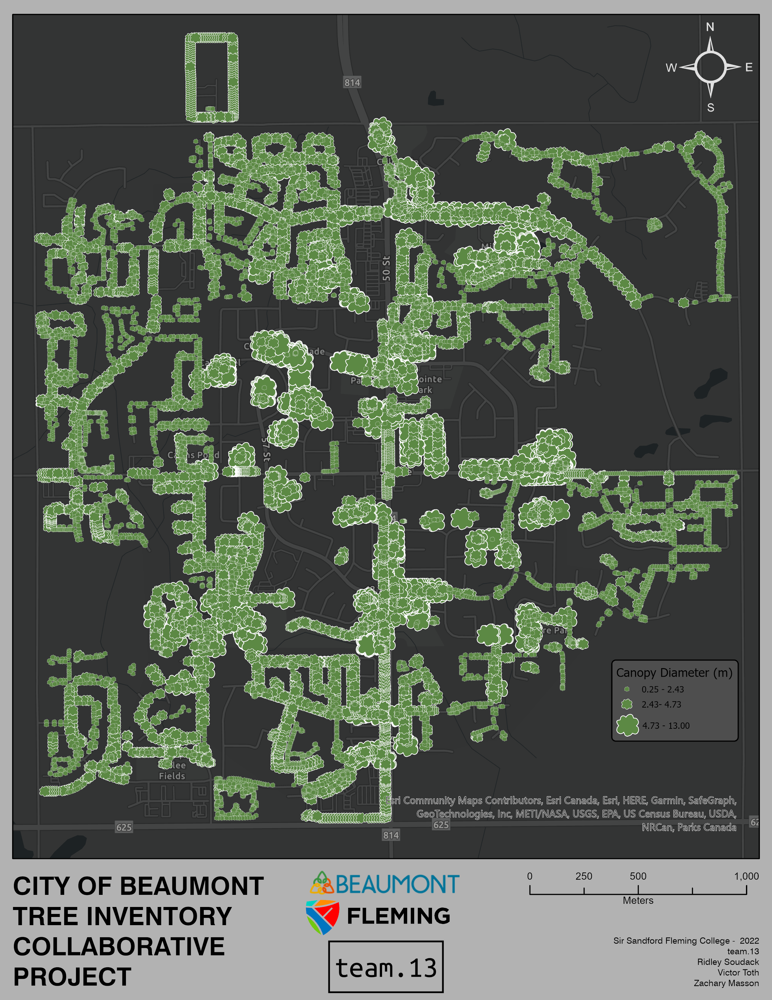
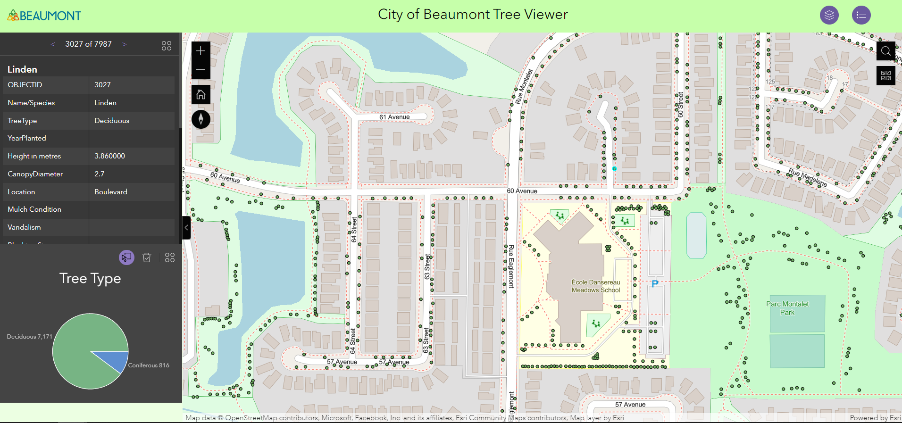
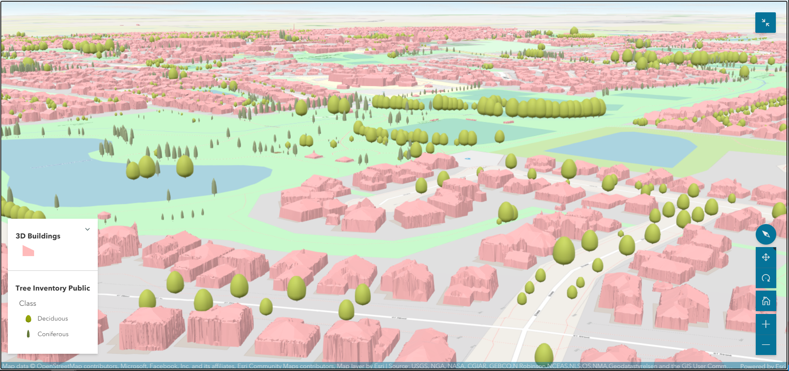

2022 - Fleming College, Collaborative Project
Simple map used for project proposal.
2022 - Fleming College, Collaborative Project
A simple ArcGIS Web Experience used to display the municipal tree inventory and present additional information on a side bar when the user selects a tree point.
2022 - Fleming College, Collaborative Project
ArcGIS 3D Scene of a municipality with the tree inventory symbolized according to class and height. 3D buildings were derived from LiDAR data and existing building footprints.